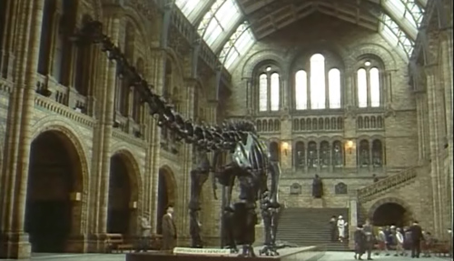
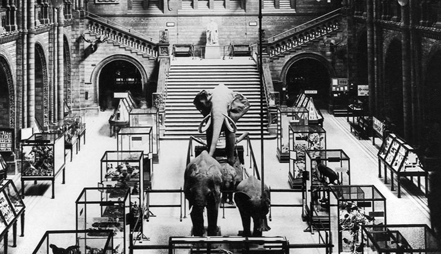
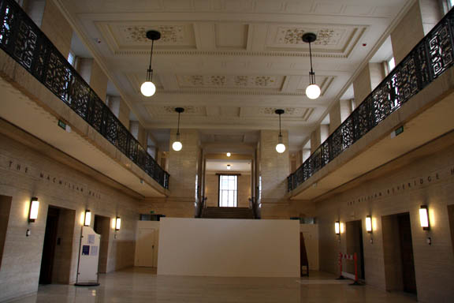
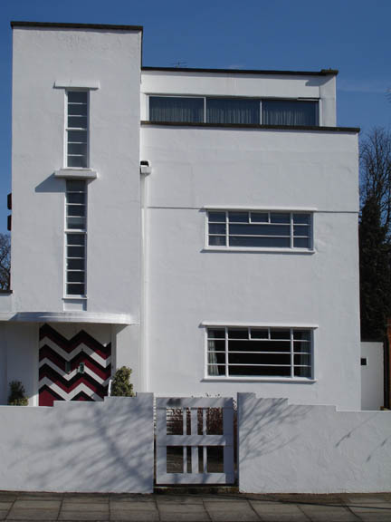

Burlington Arcade, London. The location for the Jewellery shop where the robbery took place. (Also used in 'Lord Edgware Dies' and 'Five Little Pigs').

Poirot & Hastings meet Lady Millicent Vaughan at the
Natural History Museum in London by the dinosaur skeleton.

In a rare error, the film makers missed that the skeleton of the Diplodocus was only moved to the Grand Foyer in 1979. Prior to that, the foyer was home to African elephants and a series of display cases (as above).

Senate House, part of the University of London, became 'The Athena Hotel'. (Also used in 'The Double Clue').

Poirot passes this Art Deco house in Ailsa Road, Twickenham on his way to Mr.Lavington's home. (Also used in 'Wasps' Nest').